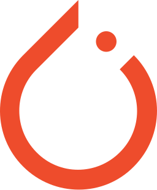
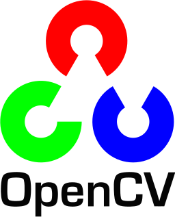
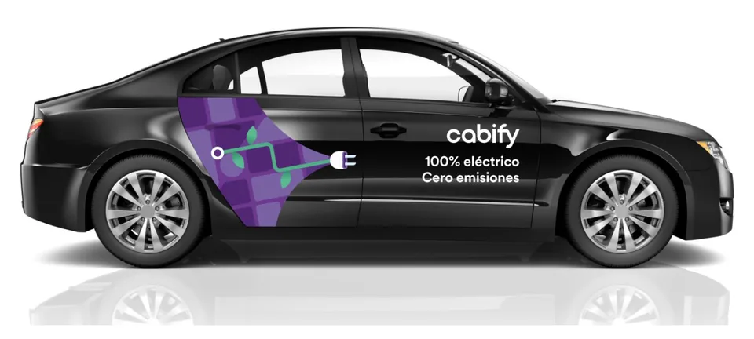
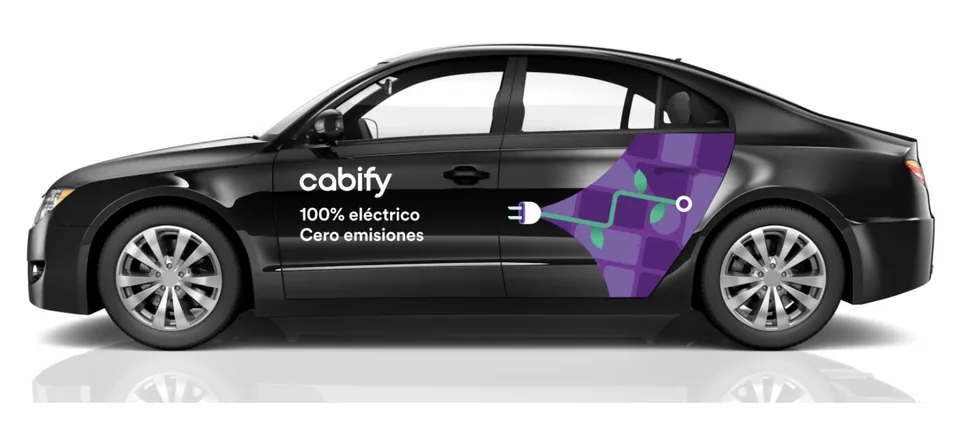

Case study · Cabify Spain · Jan to Jun 2026
Hybrid ML + LLM Vision Engine
AQM audits the vinyl wrap on every car in the fleet from drivers' phone photos. Its first version asked an LLM everything: which side of the car it was looking at, which of 13 designs, which plate, and then the hard questions about condition. Up to 18 model calls per vehicle, most of them for things a small model can answer for free. So I trained my own image classifiers for the repetitive half, watched them learn epoch by epoch, and kept the LLM for the judgement calls.

PyTorchKerasGoogle Colab
OpenCVYOLOv8 · UltralyticsSplit the work by its nature
The rule is simple: what is deterministic and repetitive runs on a local model and costs nothing in tokens; what is subjective or comparative goes to the LLM in n8n, where it is worth paying for.
| Check | Engine | Why |
|---|---|---|
| Side of the vehicle | Local CNN | A fixed visual pattern with plenty of examples; nothing to reason about |
| Vinyl type | Local CNN | A closed classification, cheap to repeat thousands of times |
| Plate | Local OCR | Pure OCR plus a format rule |
| Vinyl state against the reference | LLM | Needs to compare the real photo with the reference design |
| Dirt and damage | LLM | Subjective perception, and the answer has to be described in words |
| Rear defects | LLM | Whether a logo or a label is present and legible, with nuance |
Thirteen designs, some one word apart
AQM has to know which wrap a car carries before it can judge its condition. There are 13 designs on the road, and many differ only in a word, an icon or a crest: the electric and hydrogen wraps share the same artwork, the club designs mix crests into the brand layout, and every design looks different from each side of the car. Two of them:

Why the model never sees a mirrored car
Flipping photos horizontally is the default trick to get more training data out of the same images. Here it would invent cars that do not exist: the left side of a design is not the mirror of its right side, and every word and logo would read backwards. So the augmentation only rotates a little, zooms and changes the contrast.

Inside the first neural network
The first vinyl classifier was a convolutional neural network I wrote and trained from scratch in Keras on a free Colab GPU. A photo goes in as 256 × 256 pixels with three colour channels. Each convolution block slides small 3 × 3 filters over the image and keeps the strongest responses, so every block sees a smaller picture with more channels: the first reacts to edges, the deeper ones to combinations of them, like a patch of the artwork's colour, a line of white text on a dark door and, at the end, where the design sits on the car. Flatten lays the last block out as one row of 32,768 numbers, a dense layer of 256 neurons combines them, and 9 output neurons turn the result into one probability per class: six wrap designs, special campaigns, external advertising and rear photos.
# v1 in Keras: a small CNN written from scratch, 256 px input, 9 classes model = models.Sequential([ Input(shape=(256, 256, 3)), layers.RandomRotation(0.05), layers.RandomZoom(0.1), layers.RandomContrast(0.1), # never a horizontal flip layers.Conv2D(32, 3, padding="same", activation="relu"), layers.MaxPooling2D(), layers.Conv2D(64, 3, padding="same", activation="relu"), layers.MaxPooling2D(), layers.Conv2D(128, 3, padding="same", activation="relu"), layers.MaxPooling2D(), layers.Conv2D(128, 3, padding="same", activation="relu"), layers.MaxPooling2D(), layers.Flatten(), layers.Dense(256, activation="relu"), layers.Dropout(0.5), layers.Dense(len(class_names), activation="softmax"), ]) model.compile(optimizer="adam", loss="sparse_categorical_crossentropy", metrics=["accuracy"]) best = ModelCheckpoint("vinyl_cnn.h5", monitor="val_accuracy", save_best_only=True, mode="max") history = model.fit(X_train, y_train, epochs=250, batch_size=32, # 1,448 photos: 46 batches per epoch validation_data=(X_val, y_val), callbacks=[best]) # 363 held-out photos
The weight counts under each layer explain the next chart. The network learns 8.6 million weights from 1,448 photos, and 97% of them sit in the one dense layer after Flatten: plenty of room to memorise every training photo instead of learning the designs. The 0.5 dropout is there for that, switching off half of those 256 neurons at random on every training step, and it slows the memorising down without stopping it.
Training it, epoch by epoch
The run used 1,811 labelled photos: 1,448 to learn from and 363 held out to check it.
Three things happen in that chart. The model learns fast: 45% right on unseen photos after one epoch, 91% by epoch 20. Then it stops improving: training accuracy heads towards 100% while validation accuracy flattens around 90%. And from epoch 16 the validation loss stops falling while the training loss keeps going down: the model is memorising its own photos rather than learning the designs. That is overfitting, and accuracy alone would have hidden it.
I let that run go on to 250 epochs, and the other 210 added nothing you could trust: validation accuracy kept wobbling between 87% and 96%, around an average of 92%, while the validation loss climbed to about 1.2. ModelCheckpoint kept the best epoch, 130, at 95.9% on the held-out photos. It is a real number but an optimistic one: that epoch was chosen with the same 363 photos it is scored on, and there was no separate test set. Stopping around epoch 20 gives about the same model in less than a tenth of the time, which is why the next version stops early on its own.
What a classifier returns, and where v1 fell short
A classifier does not answer with a name. It returns a probability for every class it knows, and the highest one wins. Shown a photo of a car with the Bilbao club design, the first model got it right, but only just:
First model · 9 classes
Right answer, shaky confidence: 41.8% went to Barcelona. Besides the classifier, v1 used YOLOv8 to find the car, EasyOCR with several contrast and threshold variants for plates, and a SIFT and RANSAC homography that aligned each photo to its reference design to estimate how much of it was covered. It ran in batch over real submissions, but it confused similar designs, and the LLM version of AQM replaced it. The cascade brought the local models back, with a rule for exactly this case.
Version 2: a cascade with a confidence gate
For the cascade I switched to transfer learning in PyTorch: a ResNet18 that has already learned edges, textures and shapes from ImageNet, with a new last layer for my classes. A pretrained network needs a dozen epochs, not hundreds: at most 12, the first 2 with the pretrained layers frozen so the new layer settles, then the whole network fine-tuned, with early stopping after 4 epochs without improvement on the held-out photos. And instead of one model for everything, each model learns one narrow task.
# Cascade: each model learns one narrow task, which makes it easier to train and debug. def analyse(photo): side, p_side = side_model(photo) # right / left / rear if side == "rear": return {"side": side, "plate": read_plate(photo)} # OCR + ^[0-9]{4}[B-DF-HJ-NP-TV-Z]{3}$ vinyl, p = vinyl_model(photo) # 13 designs if p < 0.6: # rare or new design return {"side": side, "vinyl": None, "ask_llm": True} return {"side": side, "vinyl": vinyl}
With the gate in place, a clear case never reaches the LLM. The format below is exactly what the two models return; the values are illustrative.
Model 1 · side of the car
Model 2 · vinyl design
How it runs
- Two classifiers and an OCR. Model 1 decides the side (right, left, rear); model 2 classifies the vinyl design on side photos. Plates are read with EasyOCR and checked against the Spanish format; the OCR is not trained at all.
- Data. 16,000+ photos labelled by the column they came from in the capture sheet, which already says which side each photo shows, so labelling cost almost nothing.
- Confidence gate. Rare designs have few examples, so when the vinyl model is less than 60% sure, the row is flagged and the LLM decides with the reference designs.
- A new design from marketing only means retraining the vinyl model in Colab once there are enough photos of it; the side model and the OCR stay as they are.
What I learned
- An LLM is a great generalist and an expensive one. Knowing which questions do not need it is most of the saving.
- Watch the validation loss, not only the accuracy. My first model looked fine on accuracy long after its loss showed it was memorising.
- Stop when the validation loss stops improving. 210 of my 250 epochs taught the model nothing new.
- Keep a test set nobody tunes on. Picking the best epoch with the validation photos makes the final score a little too good.
- Augmentation has to respect the data. Mirroring is free extra data for photos of cats; for designs made of text and logos it is wrong data.
The car images are the official renders of the wrap designs, which are on public view in the street. Drivers' photos are not shown: they carry real plates.